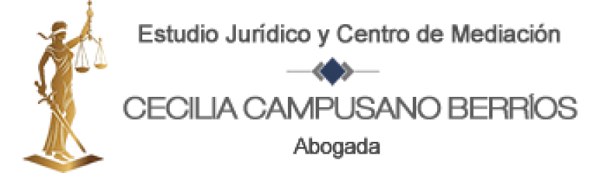

Reservar horaFamilia, civil, comercial y policía local, con atención directa de la abogada Cecilia Campusano Berríos.
Reservar horaVer serviciosUn espacio para llegar a acuerdos con ayuda de una mediadora inscrita, sin llegar a juicio.
Inscrita en los registros de mediadores del Ministerio de Justicia, la Superintendencia de Educación y la Superintendencia de Salud.
“Las áreas del derecho en las que me he especializado son Familia, Civil y Comercial.”
Cecilia Pamela Campusano Berríos es abogada titulada en Chile y en la República del Perú, y Magíster en Mediación Socio Familiar y Resolución de Conflictos. La mediación, en sus distintos ámbitos, es una parte central de su formación profesional.
Av. Los Pajaritos 3195, Of. 515
Edificio Centro, Maipú